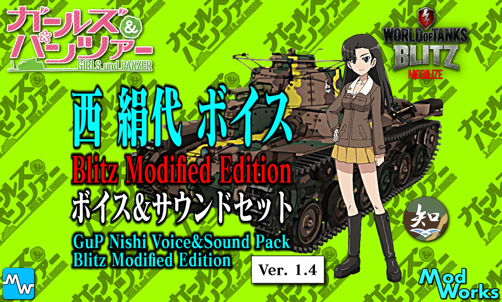

Nishi Voice (modified)
Creator
Name: WoTB_MW(通りすがりの戦車長)
Twitter:
@WoTB_MW
Mod Information
ID: sfx.voice.nishi_modified
Description: Nishi Captain Voice Mod.
Includes:
SixSence Voice
Loading Completion Voice
Quick Command Voice
Voice sample
